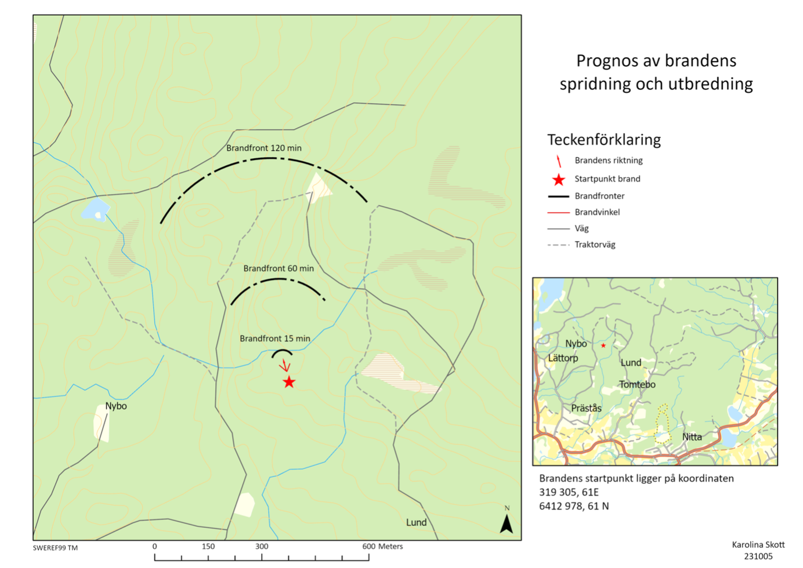
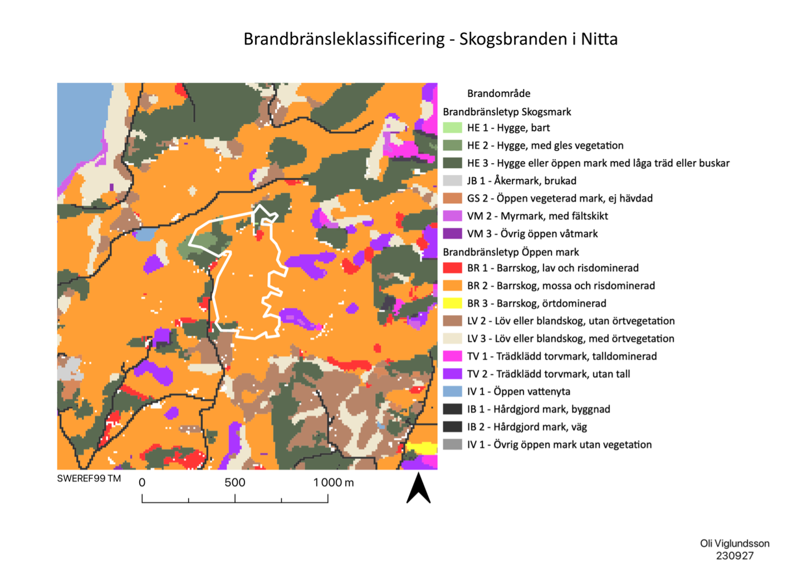
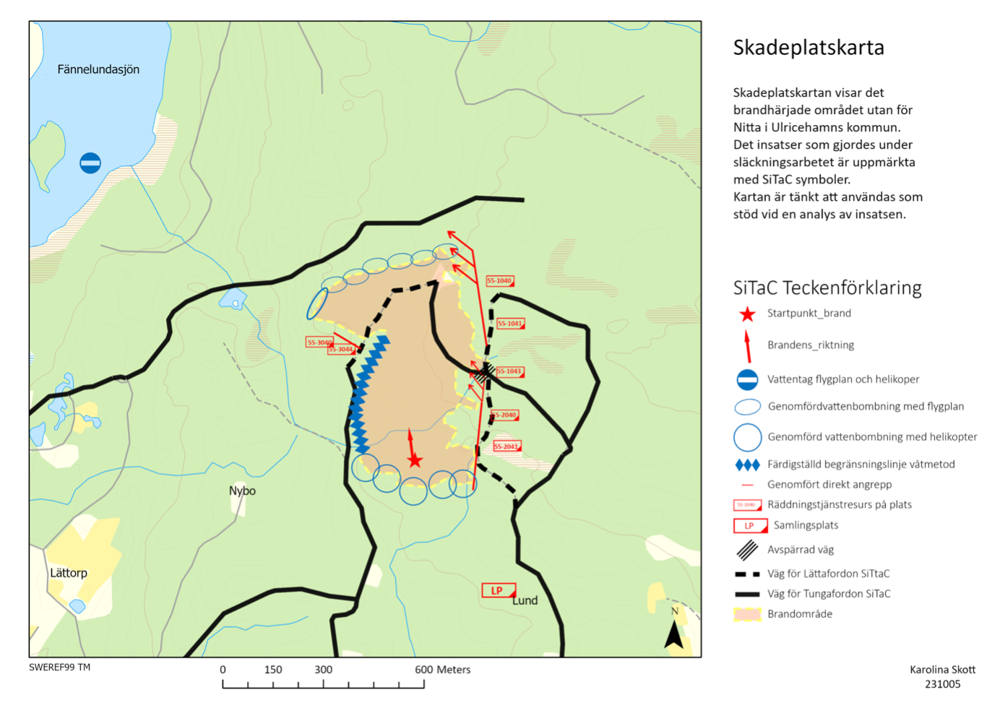
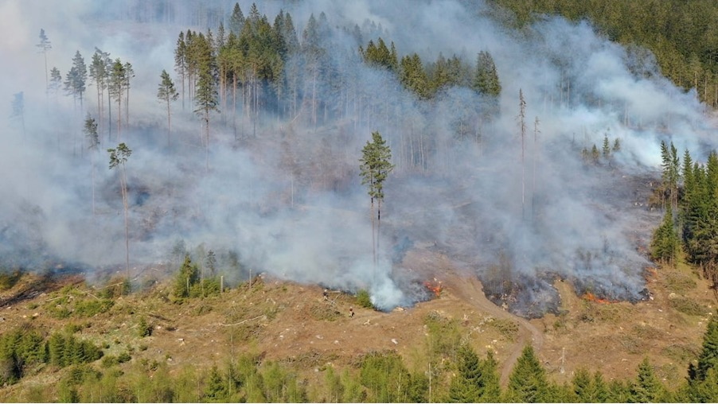

Forest fire in Nitta
An excercise in crisis preparedness that me and my fellow student Karolina Skott conducted.
Project Details / Background
On May 10, 2023, a forest fire broke out outside Nitta in Ulricehamns municipality. It raged for a little over a day. The emergency services were on the scene early and, with the help of MSB (Swedish Civil Contingencies Agency), were able to access firefighting aircraft and helicopters to gain control over the fire. In the area where the fire raged, analyses have been conducted afterwards, and the Swedish Forest Agency (Skogsstyrelsen) has, among other things, conducted measurements to estimate the area of the damaged land.
With the help of reports and data from MSB, we have been able to form an understanding of the forest's characteristics, the type of land surrounding the area, and how the fire could spread. We have also indicated how the fire was managed by the emergency services using SiTaC symbols.
The purpose of this report was to create a map support tool that can be used in an analysis and as an overview of the forest area that burned outside Nitta in Ulricehamns municipality. The created map support tools show how the fire could spread and at what times. Factors taken into account include the terrain's appearance as well as the strength and direction of the wind. The fire fuel map serves as support to further plan efforts and containment lines. With the help of this map, the rescue leader should be able to plan the response to the forest fire. Using the SiTaC symbols, a damage site map of the fire area has been created. This is done so that later analysis can be conducted on the work and efforts that were made.
Fire front map
 To be able to plan the firefighting efforts, it is useful to know the speed and direction of the wind. At the time of the fire, the wind was blowing in a northwesterly direction at 3 m/s. Under these conditions, it can be calculated that the angle of the spread cone is 40 degrees, and the fire front moves forward 75 meters in 15 minutes and widens by 5 meters per minute. The map support tool shows where one can expect the fire front to be after 15, 60, and 120 minutes. After 60 minutes, it begins to become critical to use the tractor roads that lead into the fire area due to the speed of spread. Alternatives routes or vehicles that can handle the terrain must then be used. After 120 minutes, it can be seen that the fire front has significantly increased in size.Fire fuel map
 As can be seen on the map, the forest within the burned area consists mainly of class BR 2 Coniferous forest, moss, and shrub-dominated, transitioning in the northwestern parts to class HE 1 Clear-cutting without living vegetation and HE 2 Clear-cutting, herb-dominated. Considering the conditions within the fire area, it can be assumed that the risk of spread is higher in the northwestern parts since the ground there consists mainly of HE 1 and HE 2. Clear-cut areas are generally sensitive to fire because the ground has direct exposure to sunlight and wind, which leads to a decrease in soil moisture. Combined with high wind exposure, this means that the fire spreads much faster.SiTaC map
 With the help of the SiTaC map, one can analyze the efforts and methods used during the firefighting operations and the resulting outcome. From the map, it can be seen that the fire ridge was waterbombed using helicopters, and the fire front was waterbombed using airplanes. On the western flank, a containment line was created using a wet method by deploying a sprinkler system. On the eastern flank, a direct attack was conducted, which was the most critical part. The teams worked their way along the flank to meet the aerial firefighting efforts waterbombing the front. In this way, they surrounded the fire and managed to limit its spread. The map also shows where firefighting resources were deployed and the location of the water source for the firefighting aircraft and helicopters.Forest fire in Nitta

×